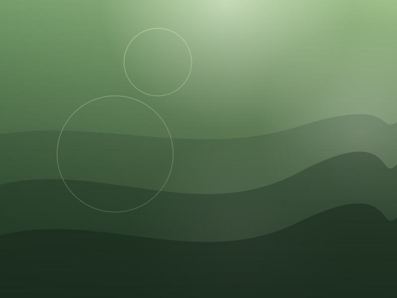
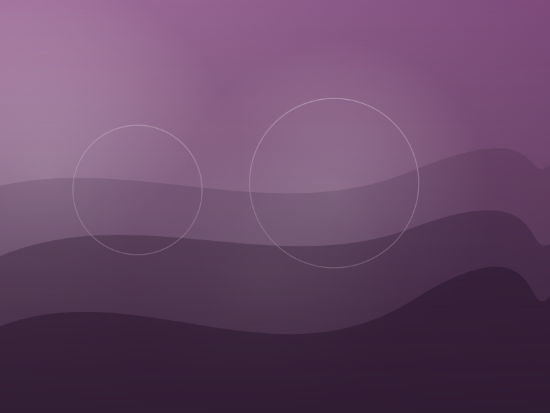
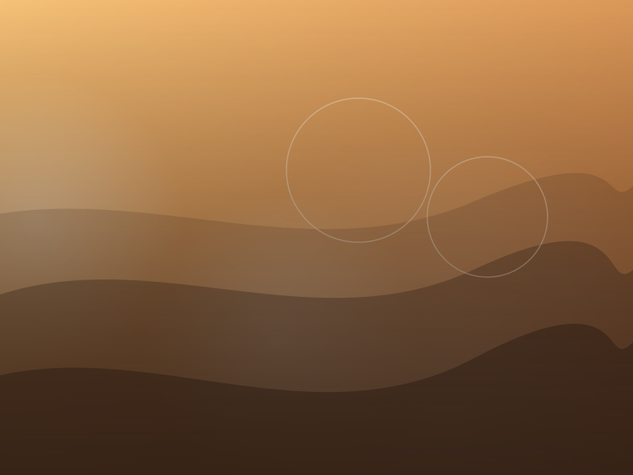
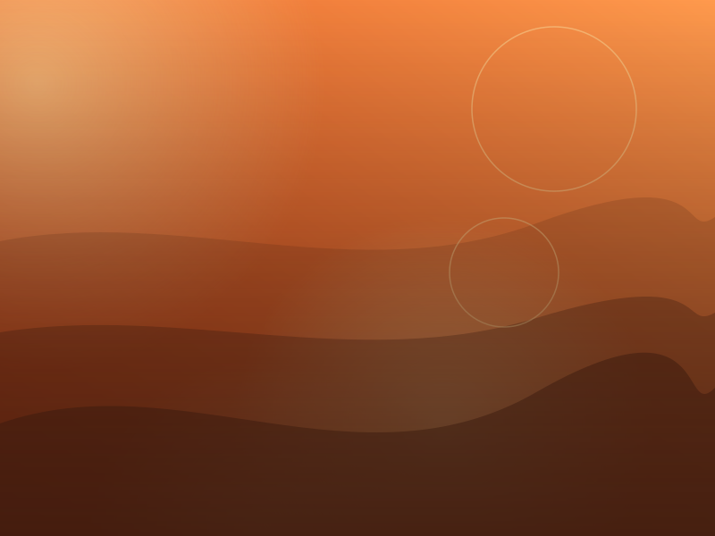
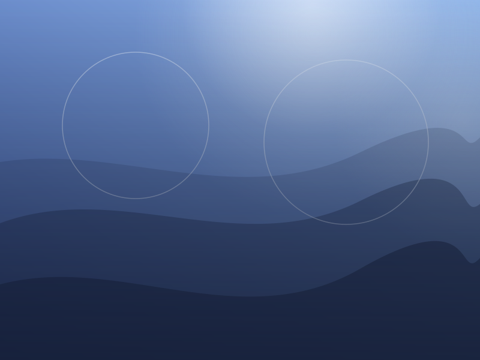
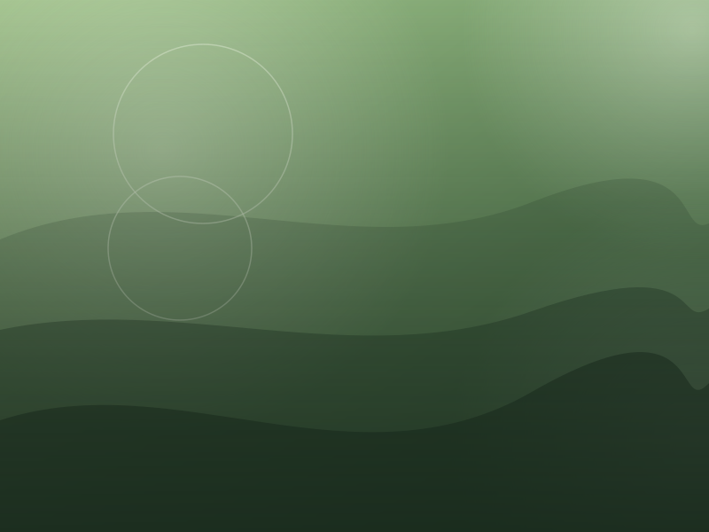
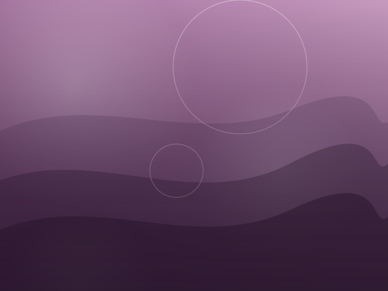
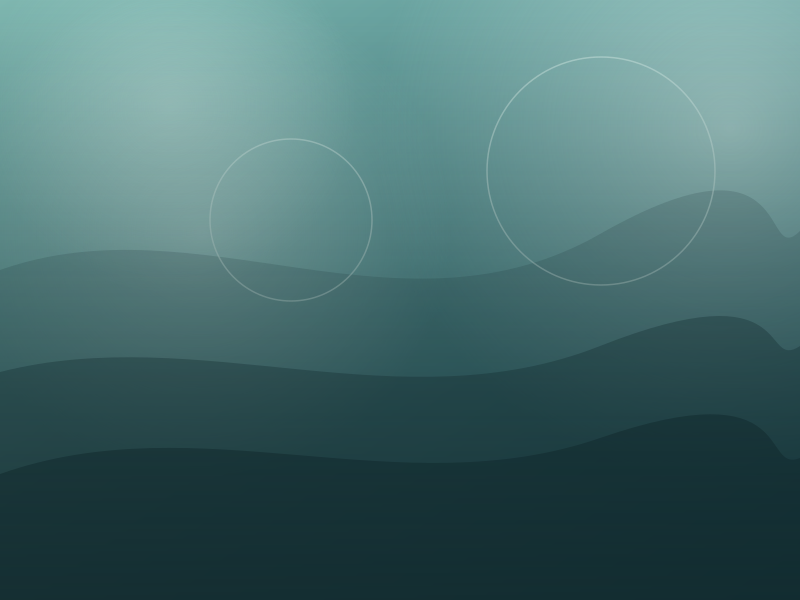

Fotoğraflar
Işığın peşinde.
Kareler şimdilik yer tutucudur; her birinin altında kısa bir açıklama var. Büyütmek için görsele tıkla.
Doğa ve ışık





Şehir ve yapılar






Çalışma ortamım





